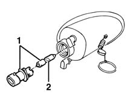

5550C18 bulb of one front turn signal, l/h or r/h - r+r
- Path
- Procedures > 55 ELECTRICAL EQUIPMENT > 5550 WARNING AND MANOEUVRING INDICATORS > 5550C TURN SIGNAL/HAZARD WARNING LIGHTS > 5550C18 bulb of one front turn signal, l/h or r/h - r+r
- Kind
- repair procedure (removal / refitting; the operation number is the code)
- Applies to
- all engines; all production periods
- Interactive page
- https://sloeber94.github.io/elrnDB-fMltpl/en/#/2891949
Applies to: all engines; all production periods
 Removing
Removing
 Refitting
Refitting5550C30 l/h or r/h front turn signal (one) - r+r .
1. Rotate the bulb holder with the bulb in an anti-clockwise direction and extract it.
2. Extract the bulb from the bulb holder.
The bulb has a bayonet fitting.

Applies to: all engines; all production periods
Refitting
RemovingFit the bulb in the bulb holder.
Insert the bulb holder with the bulb in its housing and rotate it in a clockwise direction.